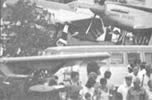
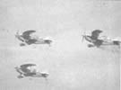
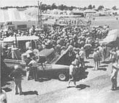

Our traveling ethanol fuel crew continues to spread the word about homegrown power!
Most folks' thoughts are turning to visions of winter woolens and turkey fixings at this time of year . . . but here in Hendersonville, North Carolina we're still humming with news about the touring summer seminars!
Last spring - as regular readers of this magazine will remember - all MOTHER's staffers were so pleased with the success of the first two trips of the traveling alcohol fuel seminars that they began enthusiastically mapping out a third series of road shows (see issue 63, page 38). And, throughout the hot summer months, the alcohol crew was presenting away-from-home demonstrations ... first, in June, on a southern circuit (covering North and South Carolina, Georgia, Alabama, and Mississippi) and then northward in Maryland and Pennsylvania during July.
But the seminar team didn't slow down even after that two-month tour . . . nor did its members confine themselves to converting only "earthbound" vehicles to run on ethanol! Instead, the crew kept right on trekking north ... to take a look at the world's largest aviation event: the Experimental Aircraft Association's annual Fly-In, held at Wittman Field in Oshkosh, Wisconsin.
MOTHER's staffers had attended the Fly-In last year (see MOTHER NO. 60, page 99) and had further stretched their wings at the "Oshkosh of the East" held in the small Tennessee city of Tullahoma (No. 61, page 26). So, with the experience of two aviation events behind them, MOM's crew immediately accepted the EAA's invitation to attend this year's August 2 - 9 gathering . . . which drew nearly half a million experimental aircraft enthusiasts as well as more than 10,000 airplanes.
Soon after arriving on the scene, MOTHER's alcohol experts had an ethanol-fueled ultralight aircraft flying with the best of the sport planes ... while our other two alcohol-powered transporters - a new dual-fueled (ethanol or gasoline) Chevy van and our "old reliable" Ford pickup - offered onlookers a chance for some close-up inspection.
But MOTHER's researchers weren't the only ones at the 1980 Fly-In who were piloting vehicles powered by renewable fuel. Paul Poberezny (the EAA's "chief") was there to greet us with his "Pober Pixie" airplane, which had been converted to ethanol the previous summer.
And, towering over the tents and the hubbub of our car and aircraft exhibitions, MOTHER's 15-foot, six-inch column distillery made an impressive silhouette against the clear Wisconsin skyline (our three-inch column still was on display as well). In fact, the milling crowds of alcohol fuel enthusiasts soon created enough excitement on the ground to rival the action taking place in the air!
As you can well imagine, with such an avid audience on hand ( and primed by the previous successful seminar tours), MOM's staffers couldn't help wanting to share their knowledge. So the real hit of the EAA meet occurred when the crew shared a sampling of alcohol lore .. . by giving a week of mini-seminars - free of charge - on homemade fuel production!
Needless to say, the response to the impromptu, information-crammed classes was overwhelmingly positive. Against the backdrop of the two alcohol stills, EAA enthusiasts soaked up every bit of ethanol information available. And - particularly important - the would-be flying alcohol fuelers were able to ask specific questions of the instructors ... and get detailed answers! In short, when the EAA gathering came to a close, there was no doubt in anyone's mind that the week had been an exceptional learning experience for everyone there ... including MOTHER's crew.
Those of you who weren't able to attend the EAA meet (or the summer's alcohol fuel seminars) will be glad to know that, at about the time you receive this issue, the ethanol research team will be a full two weeks into their last series of 1980 road shows ... during which they'll conduct lecture-demonstrations in Texas, Colorado, Utah, Montana, Arizona, New Mexico, Washington, Oregon, and California. What's more, in addition to their homebrewed fuel classes, our staffers will be holding a day-long seminar in ultra-low-cost solar systems at each location. So keep an eye on your local newspaper, and your ears tuned to the TV and radio, to find out when the tour will be in your area!
EDITOR'S NOTE: AÂ one-year EAA membership - which includes 12 issues of the organization's excellent publicaton, Sport Aviation - can be obtained for $25 by writing to the Experimental Aircraft Association, Dept. TMEN, Box 229, Hales Corners, Wisconsin 53130.
The back issues that are mentioned in this article are available - for $3.00 each plus $1.00 shipping and handling per order - from THE Mother Earth News(restricted), P.O. Box 70, Hendersonville, North Carolina 28791.
|
 The types and varities of aircraft on display provided quite a show |
 The world-famous Eagles Aerobatic Flight Team wowed the crowds |
 |